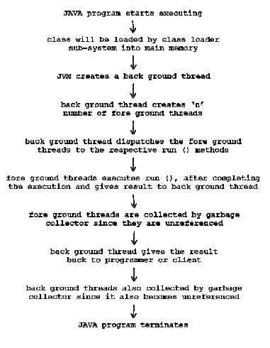
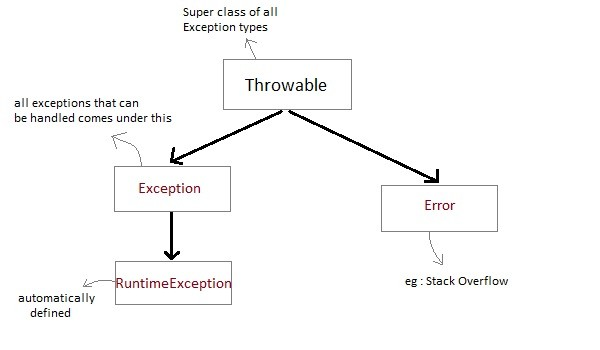

Unit IVLink
Multi threaded Programming: The Java thread model, the main thread, creating thread, creating multiple thread, using is alive () and join (). Thread priorities, synchronization, Inter thread communications, suspending resuming and stopping thread using multi threading.
Exception handling: Exception handling fundamentals
IntroductionLink
ThreadLink
- A program can be divided into a number of smallprocesses. Each small process can be addressed as a single thread (alightweight process). Multithreaded programs contain two or more threads thatcan run concurrently.A flow of control is known as thread.
- If a program contains multiple flow of controlsfor achieving concurrent execution, then that program is known asmulti-threaded program.
- A program is said to be a multithreaded programif and only if in which there exist n number of subprograms there exist aseparate flow of control. All such flow of control executing concurrently suchflow of controls are known as threads and such type of applications or programis called multi-threaded programs.
- The language like C, C++ comes under singlethreaded modelling languages, since there exists single flow of controlswhereas the language like java are treated as multi-threaded modellinglanguages, since there is a possibility of creating multiple flow of control
- In java program, there exist two threads theyare foreground and background thread.
- Foreground threads are those which are executinguser defined sub programs where as background threads are those which aremonitoring the status of foreground threads.
- There is possibility of creating n-number of foregroundthreads and always there exist single background thread.
- Multithreading is the specialized form ofmultitasking of operating system.
- In information technology, we can develop two types of applications. They are process based applications and thread based applications.
| S.No. | Process Based Applications | Thread Based Applications |
|---|---|---|
| 1 | It is the one in which there exist single flow of control. | It is the one in which there exist multiple flow of controls. |
| 2 | All C, C++ applications comes under it. | All JAVA, DOT NET applications comes under it. |
| 3 | Context switch is more (context switch is the concept of operating system and it says switching the control from one address page to another address page). | Context switch is very less. |
| 4 | For each and every sub-program there exist separate address pages. | Irrespective of ‘n’ number of subprograms there exist single address page. |
| 5 | These are treated as heavy weight components. | These are treated as light weight components. |
| 6 | In this we can achieve only sequential execution and they are not recommending for developing internet applications. | In thread based applications we can achieve both sequential and concurrent execution and they are always recommended for developing interact applications. |
How Thread executes internally

A program can perform two or more tasks simultaneously. For example, one thread is writing content on a file at the same time another thread is performing spelling check.****
In Java, the word thread means two different things.****
1. **An instance of Thread class. or,**
2. **A thread of execution.**
An instance of Thread class is just an object, like anyother object in java. But a thread of execution means an****
individual "lightweight" process that has its owncall stack. In java, each thread has its own call stack.****
A program can be divided into a number of small processes. Each small process can be addressed as a single thread (a lightweight process). Multi-threaded programs contain two or more threads that can run concurrently. This means that a single program can perform two or more tasks simultaneously. For example, one thread is writing content on a file at the same time another thread is performing spelling check.Java is a multi threaded programming language which means we can develop multi threaded program using Java. A multi threaded program contains two or more parts that can run concurrently and each part can handle different task at the same time making optimal use of the available resources specially when your computer has multiple CPUs.
By definition multitasking is when multiple processes share common processing resources such as a CPU. Multi threading extends the idea of multitasking into applications where you can subdivide specific operations within a single application into individual threads. Each of the threads can run in parallel. The OS divides processing time not only among different applications, but also among each thread within an application. Multi threading enables you to write in a way where multiple activities can proceed concurrently in the same program.
Life Cycle of a Thread(State of Thread)Link
When we write any multi-threading applications, there exist ‘n’ numbers of threads. All the threads will undergo different types of states. A thread goes through various stages in its life cycle. For example, a thread is born, started, runs, and then dies. Following diagram shows complete life cycle of a thread. A thread goes through various stages in its life cycle. For example, a thread is born, started, runs, and then dies. Following diagram shows complete life cycle of a thread.

Above-mentioned stages are explained here:
- New State: A new thread begins its life cycle in the new state. It remains in this state until the program starts the thread. It is also referred to as a born thread.
- **Ready State : **It is one in which the thread is entered into memory space allocated and it is waiting for CPU for executing.
- Runnable: After a newly born thread is started, the thread becomes runnable. A thread in this state is considered to be executing its task.
-
Running state: A state is said to be a running state if and only if the thread is under the control of CPU.
-
Waiting State: Sometimes, a thread transitions to the waiting state while the thread waits for another thread to perform a task.A thread transitions back to the runnable state only when another thread signals the waiting thread to continue executing.It is one in which the thread is waiting becauseof the following factors:
- For the repeating CPU, burst time of the thread(CPU burst time is an amount of the required by the thread by the CPU).
- Make the thread to sleep for sleep for some specified amount of time.
- Make the thread to suspend.
- Make the thread to wait for a period of time.
- Make the thread to wait without specifying waiting time
- Timed waiting: A runnable thread can enter the timed waiting state for a specified interval of time. A thread in this state transitions back to the runnable state when that time interval expires or when the event it is waiting for occurs.
- Halted State or Terminated Dead: A runnable thread enters the terminated state when it completes its task or otherwise terminates.It is one in which the thread has completed its total execution. As long as the thread is in new and halted states whose execution status is false whereas when the thread is in ready, running and waiting states that execution states is true.
Thread PrioritiesLink
Every Java thread has a priority that helps the operating system determine the order in which threads are scheduled. Java thread priorities are in the range between MIN_PRIORITY aconstantof1 and MAX_PRIORITY aconstantof10. By default, every thread is given priority NORM_PRIORITY aconstantof5. Threads with higher priority are more important to a program and should be allocated processor time before lower-priority threads. However, thread priorities cannot guarantee the order in which threads execute and very much platform dependent.
- public static final int MAX_PRIORITY (10);
- public static final int MIN_PRIORITY (1);
- public static final int NORM_PRIORITY (5);
The above data members are used for setting the priority to threads are created. By default, whenever a thread is created whose default priority NORM_PRIORITY.
Creating ThreadLink
Java defines two ways by which a thread can be created.
- By extending the Thread class(java.lang.Thread).
- By implementing the Runnable interface(**java.lang.Runnable **).
-
Create Thread by Implementing Runnable InterfaceLink
If your class is intended to be executed as a thread then you can achieve this by implementing Runnable interface. You will need to follow three basic steps: Step 1: As a first step you need to implement a run method provided by Runnable interface. This method provides entry point for the thread and you will put you complete business logic inside this method. Following is simple syntax of run method: public void run( )
Step 2: At second step you will instantiate a Thread object using the following constructor: Thread(Runnable threadObj, String threadName); Where, threadObj is an instance of a class that implements the Runnable interface and threadName is the name given to the new thread.
Step 3 Once Thread object is created, you can start it by calling start method, which executes a call to run method. Following is simple syntax of start method: void start( );
Example:
Here is an example that creates a new thread and starts it running: class RunnableDemo implements Runnable { private Thread t; private String threadName; RunnableDemo( String name){ threadName = name; System.out.println("Creating " + threadName ); } public void run() { System.out.println("Running " + threadName ); try { for(int i = 4; i > 0; i--) { System.out.println("Thread: " + threadName + ", " + i); // Let the thread sleep for a while. Thread.sleep(50); } } catch (InterruptedException e) { System.out.println("Thread " + threadName + " interrupted."); } System.out.println("Thread " + threadName + " exiting."); } public void start () { System.out.println("Starting " + threadName ); if (t == null) { t = new Thread (this, threadName); t.start (); } } } public class TestThread { public static void main(String args[]) { RunnableDemo R1 = new RunnableDemo( "Thread-1"); R1.start(); RunnableDemo R2 = new RunnableDemo( "Thread-2"); R2.start(); } } This would produce the following result: Creating Thread-1 Starting Thread-1 Creating Thread-2 Starting Thread-2 Running Thread-1 Thread: Thread-1, 4 Running Thread-2 Thread: Thread-2, 4 Thread: Thread-1, 3 Thread: Thread-2, 3 Thread: Thread-1, 2 Thread: Thread-2, 2 Thread: Thread-1, 1 Thread: Thread-2, 1 Thread Thread-1 exiting. Thread Thread-2 exiting.
Create Thread by Extending Thread Class:Link
Thread class is the main class on which Java's Multithreading system is based. Thread class, along with its companion interface Runnable will be used to create and run threads for utilizing Multithreading feature of Java. Thread class is the main class on which Java's Multithreading system is based.
Creating a flow of control in JAVA is nothing but creating an object of java.lang.Thread class. An object of Thread class can be created in three ways. They are:
- Directly Thread t=new Thread ();
- Using factory method Thread t1=Thread.currentThread ();
- Using sub-class of Thread class
class C1 extends Thread { ……………………; ……………………; }; C1 o1= new C1 (); Threadt1=new C1 ();
Here, C1 is the sub-class ofThread class. Thread API:
Constructors of Thread class
- Thread ( )
- Thread ( String str )
- Thread ( Runnable r )
-
Thread ( Runnable r, String str)
-
Thread (): With this Constructor, we can create an object of the Thread class whose default thread name is Thread-0.
For example:
Thread t=new Thread (); System.out.println (t.getName ());// Thread-0
- Thread (String str) : This Constructor is used for creating a thread and we can give the user specified thread name.
For example: Thread t=new Thread (“JAVA”); t.setName (“JAVA”); t.setPriority (Thread.MAX_PRIORITY);
-
Thread (Runnable r): This Constructor is used for converting Runnable object into Thread object for entering into run method of Runnable interface by making use of start method of Thread class without giving thread name.
-
Thread (Runnable r, String str): This Constructor is similar to above Constructor but we give thread name through this Constructor.
The second way to create a thread is to create a new class that extends Thread class using the following two simple steps. This approach provides more flexibility in handling multiple threads created using available methods in Thread class.
Step 1 You will need to override run method available in Thread class. This method provides entry point for the thread and you will put you complete business logic inside this method. Following is simple syntax of run method:
public void run( )
Step 2 Once Thread object is created, you can start it by calling start method, which executes a call to run method. Following is simple syntax of start method:
void start( );
Example: Here is the preceding program rewritten to extend Thread: class ThreadDemo extends Thread { private Thread t; private String threadName; ThreadDemo( String name){ threadName = name; System.out.println("Creating " + threadName ); } public void run() { System.out.println("Running " + threadName ); try { for(int i = 4; i > 0; i--) { System.out.println("Thread: " + threadName + ", " + i); // Let the thread sleep for a while. Thread.sleep(50); } } catch (InterruptedException e) { System.out.println("Thread " + threadName + " interrupted."); } System.out.println("Thread " + threadName + " exiting."); } public void start () { System.out.println("Starting " + threadName ); if (t == null) { t = new Thread (this, threadName); t.start (); } } } public class TestThread { public static void main(String args[]) { ThreadDemo T1 = new ThreadDemo( "Thread-1"); T1.start(); ThreadDemo T2 = new ThreadDemo( "Thread-2"); T2.start(); } } This would produce the following result: Creating Thread-1 Starting Thread-1 Creating Thread-2 Starting Thread-2 Running Thread-1 Thread: Thread-1, 4 Running Thread-2 Thread: Thread-2, 4 Thread: Thread-1, 3 Thread: Thread-2, 3 Thread: Thread-1, 2 Thread: Thread-2, 2 Thread: Thread-1, 1 Thread: Thread-2, 1 Thread Thread-1 exiting. Thread Thread-2 exiting.
Thread Methods:Link
Following is the list of important methods available in the Thread class.
Instance MethodLink
- public void start(): Starts the thread in a separate path of execution, then invokes the run method on this Thread object. This is the method which is used for making the Thread to start to execute the thread logic. The method start is internally calling the method run ().
For example: Thread t1=new Thread (); t1.start (); Thread t2=Thread.currentThread (); t2.start (); public final void suspend (): This method is used for suspending the thread from current execution of thread. When the thread is suspended, it sends to waiting state by keeping the temporary results in process control block (PCB) or job control block (JCB).
- public void run(): If this Thread object was instantiated using a separate Runnable target, the run method is invoked on that Runnable object. Any JAVA programmer want to define a logic for the thread that logic must be defined only run () method. When the thread is started, the JVM looks for the appropriate run () method for executing the logic of the thread. Thread class is a concrete class and it contains all defined methods and all these methods are being to final except run () method. run () method is by default contains a definition with null body. Since we are providing the logic for the thread in run () method. Hence it must be overridden by extending Thread class into our own class.
For example: class C1 extends Thread { public void run () { ………………………; ………………………; } };
-
public final void setName(String name): Changes the name of the Thread object. There is also a getName method for retrieving the name.
-
public final void setPriority(int priority): Sets the priority of this Thread object. The possible values are between 1 and 10.
-
public final int getPriority (); The above two methods are used for setting the priority to the thread and getting the priority of the thread respectively. For example: Thread t1=new Thread (); Int pri=t1.getPriority (); System.out.println (pri);// 5 by default t1.setPriority (Thread.MAX_PRIORITY); pri=t1.getPriority (); System.out.println (pri); // 10
-
public final void setDaemon(booleanon): A parameter of true denotes this Thread as a daemon thread.
-
public final void join(long millisec): The current thread invokes this method on a second thread, causing the current thread to block until the second thread terminates or the specified number of milliseconds passes.
-
public void interrupt(): Interrupts this thread, causing it to continue execution if it was blocked for any reason.
-
public final boolean isAlive(): Returns true if the thread is alive, which is any time after the thread has been started but before it runs to completion.
-
public final void resume (): This method is used for bringing the suspended thread from waiting state to ready state. When the thread is resumed to start executing from where it left out previously by retrieving the previous result from PCB.
-
public final void stop (): This method is used to stop the execution of the current thread and the thread goesto halted state from running state. When the thread is restarted, it starts executing from the beginning only.
-
public final void wait (long msec): This method is used for making the currently executing thread into waiting state for a period of time. Once this period of time is over, automatically the waiting thread will enter into ready state from waiting state.
Static MethodsLink
The previous methods are invoked on a particular Thread object. The following methods in the Thread class are static. Invoking one of the static methods performs the operation on the currently running thread.
- public static void yield(): Causes the currently running thread to yield to any other threads of the same priority that are waiting to be scheduled.
- public static void sleep(long millisec): Causes the currently running thread to block for at least the specified number of milliseconds. This method throws InterruptedException method is used (waiting state). If the sleep time is over automatically thread will come from waiting state to ready state. For example: Thread.sleep (1000);
- public static boolean holds(LockObject x): Returns true if the current thread holds the lock on the given Object.
- public static Thread(currentThread): Returns a reference to the currently running thread, which is the thread that invokes this method. This method is used for obtaining the threads which are running in the main memory of the computer. For example: Thread t=Thread.currentThread (); System.out.println (t);// Thread [main (fat), 5, main (bat)]
- public static void dump(Stack): Prints the stack trace for the currently running thread, which is useful when debugging a multithreaded application.
Some Important points to Remember
- When we extend Thread class, we cannot override setName() and getName() functions, because they are declared final in Thread class.
- While using sleep(), always handle the exception it throws.
- static void sleep(long milliseconds) throws InterruptedException
Example:
Write a JAVA program to findthe threads which are running internally and print priority values. Answer: class ThDemo { publicstatic void main (String [] args) { Threadt=Thread.currentThread (); System.out.println(t); t.setName("ABC"); System.out.println(t); System.out.println("IS IT ALIVE..?"+t.isAlive ());// true Threadt1=new Thread ();// new state System.out.println("IS IT ALIVE..?"+t.isAlive ());// false System.out.println("DEFAULT NAME OF THREAD = "+t1.getName ());// Thread-0 System.out.println("MAXIMUM PRIORITY VALUE = "+Thread.MAX_PRIORITY);// 10 System.out.println("MINIMUM PRIORITY VALUE = "+Thread.MIN_PRIORITY);// 1 System.out.println("NORMAL PRIORITY VALUE = "+Thread.NORM_PRIORITY);// 5 } };
The following ThreadClassDemo program demonstrates some of these methods of the Thread class. Consider a class DisplayMessage which implements Runnable: // File Name : DisplayMessage.java // Create a thread to implement Runnable public class DisplayMessage implements Runnable { private String message; public DisplayMessage(String message) { this.message = message; } public void run() { while(true) { System.out.println(message); } } }
Following is another class which extends Thread class:
// File Name : GuessANumber.java // Create a thread to extentd Thread public class GuessANumber extends Thread { private int number; public GuessANumber(int number) { this.number = number; } public void run() { int counter = 0; int guess = 0; do { guess = (int) (Math.random() * 100 + 1); System.out.println(this.getName() - " guesses " + guess); counter++; }while(guess != number); - System.out.println("** Correct! " + this.getName() - " in " + counter + " guesses.**"); } }
Following is the main program which makes use of above defined classes:
// File Name : ThreadClassDemo.java public class ThreadClassDemo { public static void main(String [] args) { Runnable hello = new DisplayMessage("Hello"); Thread thread1 = new Thread(hello); thread1.setDaemon(true); thread1.setName("hello"); System.out.println("Starting hello thread..."); thread1.start(); Runnable bye = new DisplayMessage("Goodbye"); Thread thread2 = new Thread(bye); thread2.setPriority(Thread.MIN_PRIORITY); thread2.setDaemon(true); System.out.println("Starting goodbye thread..."); thread2.start(); System.out.println("Starting thread3..."); Thread thread3 = new GuessANumber(27); thread3.start(); try { thread3.join(); }catch(InterruptedException e) { System.out.println("Thread interrupted."); } System.out.println("Starting thread4..."); Thread thread4 = new GuessANumber(75); thread4.start(); System.out.println("main() is ending..."); } } This would produce the following result. You can try this example again and again and you would get different result every time. Starting hello thread... Starting goodbye thread... Hello Hello Hello Hello Hello Hello Goodbye Goodbye Goodbye Goodbye Goodbye .......
Major Java Multithreading Concepts: While doing Multithreading programming in Java, you would need to have the following concepts very handy: What is thread synchronization? Handling threads inter communication Handling thread deadlock Major thread operations Loading [MathJax]/jax/output/HTML-CSS/ja
Joining ThreadLink
Sometimes one thread needs to know when another thread is ending. In java, isAlive() and join() are two different methods to check whether a thread has finished its execution. The isAlive() methods return true if the thread upon which it is called is still running otherwise it return false.
final boolean isAlive() But, join() method is used more commonly than isAlive(). This method waits until the thread on which it is called terminates. final void join() throws InterruptedException Using join() method, we tell our thread to wait until the specifid thread completes its execution. There are overloaded versions of join() method, which allows us to specify time for which you want to wait for the specified thread to terminate. final void join(long milliseconds) throws InterruptedException
Example of isAlive method public class MyThread extends Thread { public void run() { System.out.println("r1 "); try{ Thread.sleep(500); }catch(InterruptedException ie){} System.out.println("r2 "); } public static void main(String[] args) { MyThread t1=new MyThread(); MyThread t2=new MyThread(); t1.start(); t2.start(); System.out.println(t1.isAlive()); System.out.println(t2.isAlive()); } } Output r1 true true r1 r2 r2
Example of thread without join() method public class MyThread extends Thread { public void run() { System.out.println("r1 "); try{ Thread.sleep(500); }catch(InterruptedException ie){} System.out.println("r2 "); } public static void main(String[] args) { MyThread t1=new MyThread(); MyThread t2=new MyThread(); t1.start(); t2.start(); } } Output r1 r1 r2 r2
In this above program two thread t1 and t2 are created. t1 starts first and after printing "r1" on console thread t1 goes to sleep for 500 mls.At the same time Thread t2 will start its process and print "r1" on console and then goes into sleep for 500 mls. Thread t1 will wake up from sleep and print "r2" on console similarly thread t2 will wake up from sleep and print "r2" on console. So you will get output like r1 r1 r2 r2
Example of thread with join() method public class MyThread extends Thread { public void run() { System.out.println("r1 "); try{ Thread.sleep(500); }catch(InterruptedException ie){} System.out.println("r2 "); } public static void main(String[] args) { MyThread t1=new MyThread(); MyThread t2=new MyThread(); t1.start(); try{ t1.join(); //Waiting for t1 to finish }catch(InterruptedException ie){} t2.start(); } } Output r1 r2 r1 r2
In this above program join() method on thread t1 ensure that t1 finishes it process before thread t2 starts. Specifying time with join() If in the above program, we specify time while using join() with m1, then m1 will execute for that time, and then m2 and m3 will join it. m1.join(1500); Doing so, initially m1 will execute for 1.5 seconds, after which m2 and m3 will join it.
SynchronizationLink
At times when more than one thread try to access a shared resource, we need to ensure that resource will be used by only one thread at a time. The process by which this is achieved is called synchronization. The synchronization keyword in java creates a block of code referred to as critical section. Every Java object with a critical section of code gets a lock associated with the object. To enter critical section a thread need to obtain the corresponding object's lock. General Syntax : synchronized (object) { //statement to be synchronized } Why we use Syncronization ? If we do not use syncronization, and let two or more threads access a shared resource at the same time, it will lead to distorted results. Consider an example, Suppose we have two different threads T1 and T2, T1 starts execution and save certain values in a file temporary.txt which will be used to calculate some result when T1 returns. Meanwhile, T2 starts and before T1 returns, T2 change the values saved by T1 in the file temporary.txt (temporary.txt is the shared resource). Now obviously T1 will return wrong result. To prevent such problems, synchronization was introduced. With synchronization in above case, once T1 starts using temporary.txt file, this file will be locked(LOCK mode), and no other thread will be able to access or modify it until T1 returns. Using Synchronized Methods Using Synchronized methods is a way to accomplish synchronization. But lets first see what happens when we do not use synchronization in our program. Example with no Synchronization
class First { public void display(String msg) { System.out.print ("["+msg); try { Thread.sleep(1000); } catch(InterruptedException e) { e.printStackTrace(); } System.out.println ("]"); } } class Second extends Thread { String msg; First fobj; Second (First fp,String str) { fobj = fp; msg = str; start(); } public void run() { fobj.display(msg); } } public class Syncro { public static void main (String[] args) { First fnew = new First(); Second ss = new second(fnew, "welcome"); Second ss1= new second (fnew,"new"); Second ss2 = new second(fnew, "programmer"); } } Output : [welcome [ new [ programmer] ] ]
In the above program, object fnew of class First is shared by all the three running threads(ss, ss1 and ss2) to call the shared method(void display). Hence the result is unsynchronized and such situation is called Race condition.
Synchronized KeywordLink
To synchronize above program, we must serialize access to the shared display() method, making it available to only one thread at a time. This is done by using keyword synchronized with display() method. synchronized void display (String msg)
Using Synchronised blockLink
If you have to synchronize access to object of a class that has no synchronized methods, and you cannot modify the code. You can use synchronized block to use it.
class First { public void display(String msg) { System.out.print ("["+msg); try { Thread.sleep(1000); } catch(InterruptedException e) { e.printStackTrace(); } System.out.println ("]"); } } class Second extends Thread { String msg; First fobj; Second (First fp,String str) { fobj = fp; msg = str; start(); } public void run() { synchronized(fobj) //Synchronized block { fobj.display(msg); } } } public class Syncro { public static void main (String[] args) { First fnew = new First(); Second ss = new second(fnew, "welcome"); Second ss1= new second (fnew,"new"); Second ss2 = new second(fnew, "programmer"); } } Output : [welcome] [new] [programmer]
Because of synchronized block this program gives the expected output.
Inter Thread CommunicationLink
If two or more threads are exchanging the data then that communication is known as inter thread communication. In inter thread communication; an output of one thread is given as an input to another thread. In order to develop inter thread communication applications we must make use of a class called java.lang.Object. Java provide benefit of avoiding thread pooling using inter thread communication.
Methods in java.lang.Object:
- public void wait (long msec)
- public void wait (long msec, int nanosec)
- public void wait ()
- public void notify ()
- public void notifyAll ()
These methods are implemented as final in Object. All methods can be called only from within a synchronized context. wait() tells calling thread to give up monitor and go to sleep until some other thread enters the same monitor and call notify. notify() wakes up a thread that called wait() on same object. notifyAll() wakes up all the thread that called wait() on same object Difference between wait() and sleep()
| wait() | sleep() |
|---|---|
| called from synchronised block **** | no such requirement**** |
| monitor is released **** | monitor is not released**** |
| awake when notify() or notifyAll() method is called.**** | not awake when notify() or notifyAll() method is called**** |
| not a static method **** | static method**** |
| wait() is generally used on condition **** | sleep() method is simply used to put your thread on sleep.**** |
Thread PoolingLink
Pooling is usually implemented by loop i.e to check somecondition repeatedly. Once condition is true appropriate action is taken. This waste CPU time.
DeadlockLink
Deadlock is a situation of complete Lock, when no thread cancomplete its execution because lack of resources. In the above picture, Thread1 is holding a resource R1, and need another resource R2 to finish execution,but R2 is locked by Thread 2, which needs R3, which in turn is locked by Thread3. Hence none of them can finish and are stuck in a deadlock.
//Example of deadlock class Pen{} class Paper{} public class Write { public static void main(String[] args) { final Pen pn =new Pen(); final Paper pr =new Paper(); Thread t1 = new Thread() { public void run() { synchronized(pn) { System.out.println("Thread1is holding Pen"); try { Thread.sleep(1000); } catch(InterruptedExceptione){} synchronized(pr) { System.out.println("Requesting for Paper"); } } } }; Thread t2 = new Thread() { public void run() { synchronized(pr) { System.out.println("Thread2is holding Paper"); try { Thread.sleep(1000); } catch(InterruptedExceptione){} synchronized(pn) { System.out.println("requesting for Pen"); } } } }; t1.start(); t2.start(); } } Output Thread1 is holding Pen Thread2 is holding Paper
//Write a JAVA program whichproduces 1 to 10 numbers in which even numbers are produced by one thread andodd numbers are produced by another thread. //Answer: class Th1 extends Thread { public void run () { try { for (int i=1; i<=10; i+=2) { System.out.println("VALUE OF ODD : "+i); Thread.sleep (1000); } } catch (InterruptedException ie) { System.out.println (ie); } } }; class Th2 implements Runnable { public void run () { try { for (int j=2; j<=10; j+=2) { System.out.println("VALUE OF EVEN : "+j); Thread.sleep (1000); } } catch (InterruptedException ie) { System.out.println (ie); } } } class ThDemo6 { public static void main (String [] args) { Th1 t1=new Th1 ();// object of Thread class Th2 t2=new Th2 ();// object of Runnable class Thread t=new Thread (t2);// Runnable isconverted into Thread object System.out.println ("BEFORE START T1 IS: "+t1.isAlive ()); System.out.println ("BEFORE START T2 IS: "+t.isAlive ()); t1.start (); t.start (); System.out.println ("AFTER START T1 IS :"+t1.isAlive ()); System.out.println ("AFTER START T2 IS :"+t.isAlive ()); try { t1.join ();// to make thread tojoin together for getting performance t.join (); } catch (InterruptedException ie) { System.out.println (ie); } System.out.println ("AFTER JOINING T1 IS: "+t1.isAlive ()); System.out.println ("AFTER JOINING T2 IS: "+t.isAlive ()); } }
Can we Start a thread twice ?Link
No, a thread cannot be started twice. If you try to do so, IllegalThreadStateException will be thrown. public static void main( String args[] ) { MyThread mt = new MyThread(); mt.start(); mt.start(); //Exception thrown } When a thread is in running state, and you try to start it again, or any method try to invoke that thread again using start () method, exception is thrown.
Exception HandlingLink
Java provides a neater, more structured alternative method for dealing with possible errors that can occur while a program is running.
- Exceptions are things that are not supposed to occur
- The word “exception” is meant to be more general than “error”.
- Some exceptions (like division by zero) are avoidable through careful programming
- Some exceptions (like losing a network connection) are not avoidable or predictable
- Java allows programmers to define their own means of handling exceptions when they occur
Exception Handling is the mechanism to handle runtime malfunctions. We need to handle such exceptions to prevent abrupt termination of program. The term exception means exceptional condition, it is a problem that may arise during the execution of program. A bunch of things can lead to exceptions, including programmer error, hardware failures, files that need to be opened cannot be found, resource exhaustion etc.
ExceptionLink
A Java Exception is an object that describes the exception that occurs in a program. When an exceptional events occurs in java, an exception is said to be thrown. The code that's responsible for doing something about the exception is called an exception handler.
Exception class HierarchyLink
All exception types are subclasses of class Throwable, which is at the top of exception class hierarchy.

- Exception class is for exceptional conditions that program should catch. This class is extended to create user specific exception classes.
- RuntimeException is a subclass of Exception. Exceptions under this class are automatically defined for programs.
Exception are categorized into 3 category.Link
- Checked Exception: The exception that can be predicted by the programmer.Example : File that need to be opened is not found. These type of exceptions must be checked at compile time.
- Unchecked Exception: Unchecked exceptions are the class that extends RuntimeException. Unchecked exception are ignored at compile time. Example : ArithmeticException, NullPointerException, Array Index out of Bound exception. Unchecked exceptions are checked at runtime.
- Error: Errors are typically ignored in code because you can rarely do anything about an error. Example : if stack overflow occurs, an error will arise. This type of error is not possible handle in code.
Uncaught ExceptionsLink
When we don't handle the Exceptions, they lead to unexpected program termination. Lets take an example for better understanding.
class UncaughtException { public static void main(String args[]) { int a = 0; int b = 7/a; // Divide by zero, will lead to exception } }
This will lead to an exception at runtime, hence the Java run-time system will construct an exception and then throw it. As we don't have any mechanism for handling exception in the above program, hence the default handler will handle the exception and will print the details of the exception on the terminal.

Finally ClauseLink
- When exception is thrown control is transferred to method containing the catch block to handle the exception
- Control does not return to procedure in which the exception was thrown unless it contains a finally clause
- The finally clause can be used to clean up the programming environment after the exceptions has been handled
Finally clause Example
void n() { … try { … open window … p() … } catch (SomeException se) { … } finally { … close window … } … } void p() { … throw se … }
Introduction
An exception or exceptional event is a problem that arises during the execution of a program. When an Exception occurs the normal flow of the program is disrupted and the program/Application terminates abnormally, which is not recommended, therefore these exceptions are to be handled. An exception can occur for many different reasons, below given are some scenarios where exception occurs.
- A user has entered invalid data.
- A file that needs to be opened cannot be found.
- A network connection has been lost in the middle of communications or the JVM has run out of memory.
Some of these exceptions are caused by user error, others by programmer error, and others by physical resources that have failed in some manner. Based on these we have three categories of Exceptions you need to understand them to know how exception handling works in Java,
- Checked exceptions: A checked exception is an exception that occurs at the compile time, these are also called as compile time exceptions. These exceptions cannot simply be ignored at the time of compilation, the Programmer should take care of handle these exceptions.
- For example, if you use FileReader class in your program to read data from a file, if the file specified in its constructor doesn't exist, then an FileNotFoundException occurs, and compiler prompts the programmer to handle the exception.
import java.io.File; import java.io.FileReader; public class FilenotFound_Demo { public static void main(String args[]) { File file=new File("E://file.txt"); FileReader fr = new FileReader(file); } }
If you try to compile the above program you will get exceptions as shown below.
FilenotFound_Demo.java:8: error: unreported exception FileNotFoundException; must be caught or declared to be thrown FileReader fr = new FileReader(file); ^ 1 error
Note: Since the methods read and close of FileReader class throws IOException, you can observe that compiler notifies to handle IOException, along with FileNotFoundException. Unchecked exceptions: An Unchecked exception is an exception that occurs at the time of execution, these are also called as Runtime Exceptions, these include programming bugs, such as logic errors or improper use of an API. runtime exceptions are ignored at the time of compilation. For example, if you have declared an array of size 5 in your program, and trying to call the 6th element of the array then an ArrayIndexOutOfBoundsExceptionexception occurs.
QuestionsLink
How to use handle the exception hierarchies? How to use handle the exception methods? How to use handle the runtime exceptions? How to use handle the empty stack exception ? How to use catch to handle the exception? How to use catch to handle chained exception? How to use handle the exception with overloaded methods ? How to handle the checked exceptions? How to pass arguments while throwing checked exception? How to handle multiple exceptions divide by zero? How to handle multiple exceptions Array out of bound? How to print stack of the Exception? How to use exceptions with thread? How to create user defined Exception